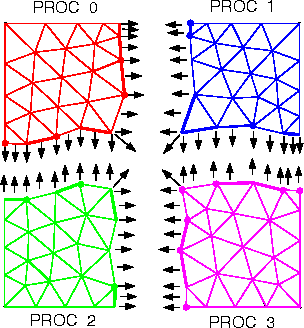

PMDB Interprocessor Links
PMDB Interprocessor Links

Two-dimensional example of a distributed mesh. Arrows
represent interprocessor pointers between boundary entities. Heavy
edges and vertices indicate the unique owner of each shared boundary
entity.